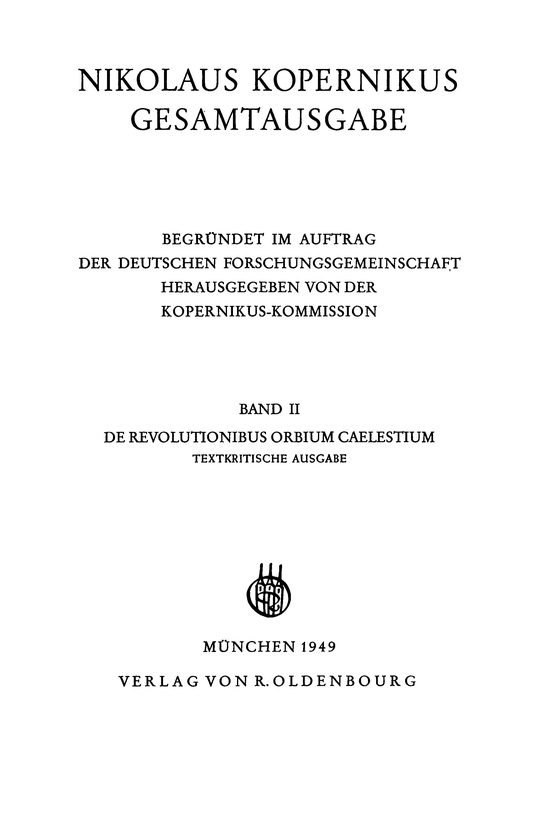
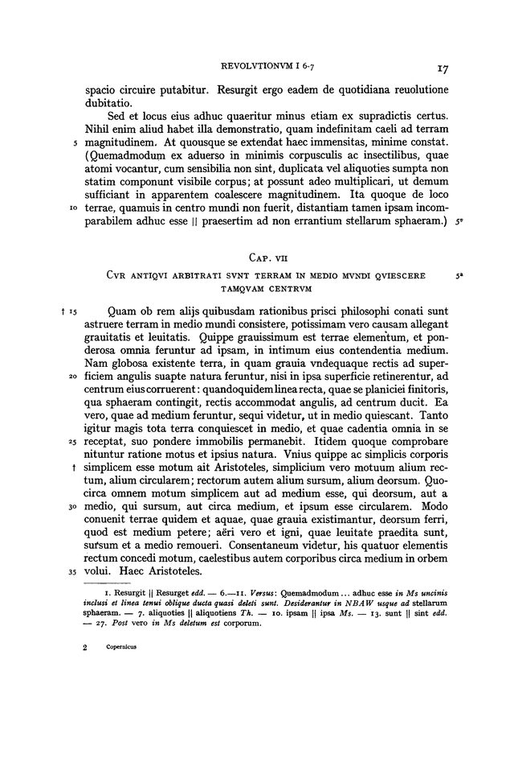
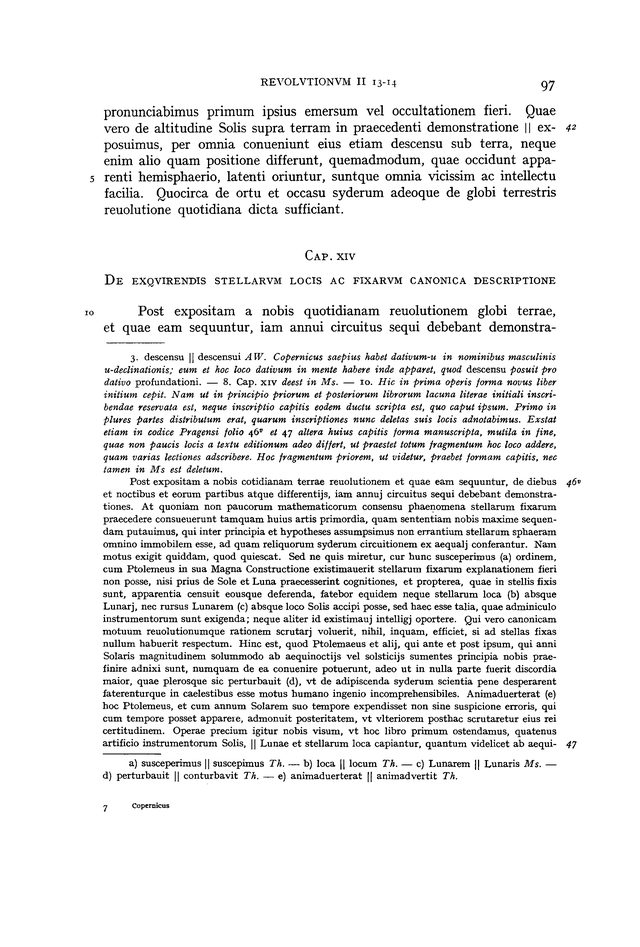
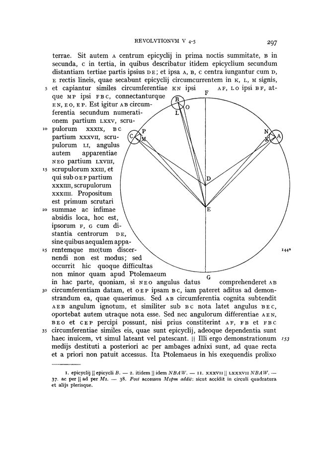
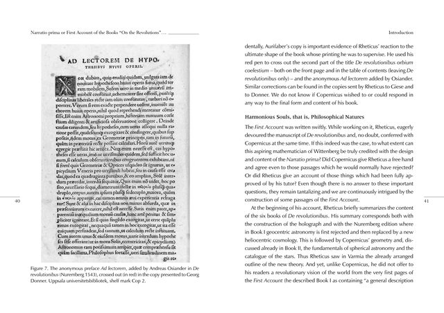
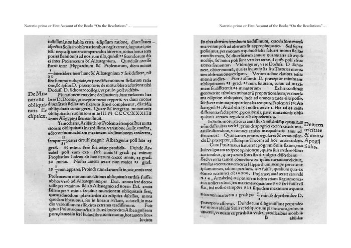

Erzählung
Der Bestand
Die Gesamtausgabe umfasst in der PDAI 6 Bände mit 2.935 Seiten. Der Band II bringt den kritischen Text von De revolutionibus auf 476 Seiten. Die Sätze des Korpus sind zu 53,4 % deutsch und zu 42,1 % lateinisch.
Digitale Edition · Portal
Die Primärsammlung der PDAI enthält 10 Werke mit 3.644 Seiten, darunter 6 Bände der Kopernikus-Gesamtausgabe. Dazu kommen 56 Werke der Sekundärliteratur mit 8.351 Seiten. Diese Seite zeigt, was vorliegt und wo die Angaben der Sammlung noch geprüft werden müssen.
Grundlage sind die Bände der Kopernikus-Gesamtausgabe, die Ausgabe Nicolaus Copernicus: De revolutionibus von 1949 und weitere Ausgaben und Übersetzungen. Die Rechte an den Vorlagen und an den Digitalisaten sind nicht geklärt; diese Seite zeigt nur Ausschnitte.
Erzählung
Die Gesamtausgabe umfasst in der PDAI 6 Bände mit 2.935 Seiten. Der Band II bringt den kritischen Text von De revolutionibus auf 476 Seiten. Die Sätze des Korpus sind zu 53,4 % deutsch und zu 42,1 % lateinisch.
Sekundärliteratur
Die Sekundärliteratur reicht von Werken des Jahres 1507 bis 2023. Für 55 Werke ist ein Jahr erfasst.
Digitale Edition
Faksimile und Transkription nebeneinander, mit Suche über Lemmata, Personen und Orte in Primärquellen und Sekundärliteratur.
Umfeld
595 Foliseiten der Verteidigung des Theon gegen Trapezuntius liegen als diplomatische und normalisierte Transkription vor. Die Vorlage ist eine Handschrift im Archiv der Russischen Akademie der Wissenschaften in St. Petersburg; die Transkription stammt von der Webseite regio.dartmouth.edu und ist keine PDAI-Edition.
Arbeitsentwurf
Ein Entwurf verfolgt, wie astronomisches Wissen 1522 bis 1524 über humanistische und diplomatische Netze von Nürnberg nach Ermland gelangte, bis zu Kopernikus' Brief gegen Werner vom 3. Juni 1524. Der Text ist ein unveröffentlichter Entwurf und hier nicht abrufbar.
Erläuterung des methodischen Ansatzes
Jede Zahl auf dieser Seite wird beim Bauen aus den Angaben der Sammlung gelesen. Fehlt eine Quelle, bricht der Bau ab.
Die Sammlung ist noch nicht durchgehend geprüft. Die Katalogangabe der Datei Copernicus1873 passt nicht zu den geprüften Seiten; sie zeigen deutschen, biographischen Text. Die Seite nennt solche Lücken, statt sie zu glätten.
Zwei Schichten des Bestands, der kritische Text der Gesamtausgabe und die Narratio prima des Rheticus.

Gesamtausgabe II, TitelblattNikolaus Kopernikus Gesamtausgabe, Band II: De revolutionibus orbium caelestium, München: Oldenbourg 1949.
Gesamtausgabe II, Buch IKapitel VII: Warum die Alten glaubten, die Erde ruhe in der Mitte der Welt, mit Apparat unter dem Text.
Gesamtausgabe II, Buch IVKapitel XIV: Über die Bestimmung der Sternörter; der textkritische Apparat nimmt etwa ein Drittel des Satzspiegels ein.
Gesamtausgabe II, Buch VGeometrische Figur mit Kreis und Buchstabenpunkten im fünften Buch.
Narratio prima, Seite 20Eingefügter Faksimileausschnitt: Ad lectorem de hypothesibus huius operis.
Narratio prima, Seite 40Zwei gedruckte Seiten des 16. Jahrhunderts mit handschriftlichen Randnotizen.Titel wie im Katalog der PDAI; die Seitenzahlen sind die Seitenordner des Digitalisats.
| Kürzel | Titel | Jahr | Seiten |
|---|---|---|---|
| Thorn 1873 | De revolutionibus orbium coelestium libri VI, Ausgabe Thorn 1873 | 1873 | 602 |
| Zekl 1990 | Das neue Weltbild: Commentariolus, Brief gegen Werner, De revolutionibus I (Zekl) | 1990 | 10 |
| Rheticus 1540 | Narratio prima | 1540 | 77 |
| Rosen 1937 | The Commentariolus of Copernicus (Rosen) | 1937 | 20 |
| GW II | Nikolaus Kopernikus Gesamtausgabe, Band II: De revolutionibus libri sex | 1949 | 476 |
| GW IV | Nicolaus Copernicus Gesamtausgabe, Band IV | 2019 | 712 |
| GW IX | Nicolaus Copernicus Gesamtausgabe, Band IX | 527 | |
| GW V | Nicolaus Copernicus Gesamtausgabe, Band V | 1999 | 306 |
| GW VI/1 | Nicolaus Copernicus Gesamtausgabe, Band VI/1 | 1994 | 433 |
| GW VI/2 | Nicolaus Copernicus Gesamtausgabe, Band VI/2 | 1996 | 481 |
Was diese Seite zeigt, stammt aus den folgenden Quellen.
Bände der Kopernikus-Gesamtausgabe, De revolutionibus, Narratio prima des Rheticus und weitere Ausgaben.
Sekundärliteratur zu Kopernikus und seinem Umfeld.